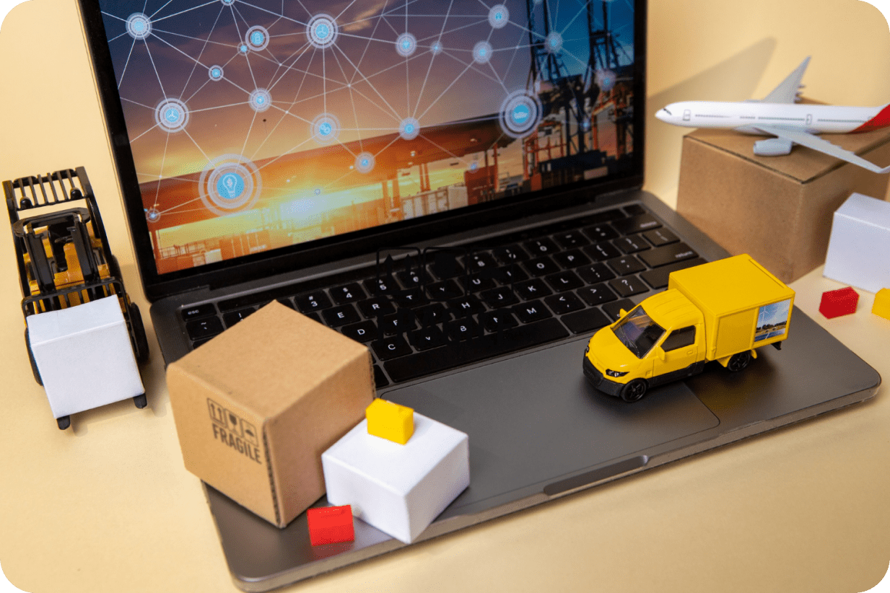
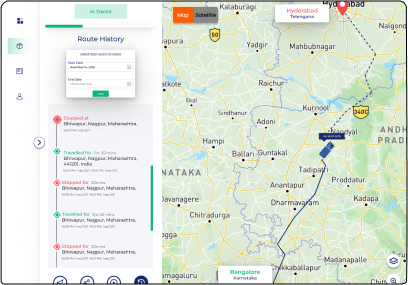
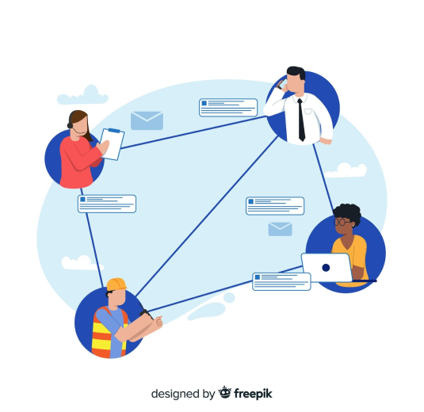

Achieving End-to-End Visibility with Logistics Tracking Solutions
INTRODUCTION
In the ever-evolving landscape of freight management, the pursuit of end-to-end visibility has become paramount. Traditional tracking methods have often left businesses grappling with delays, uncertainties, and operational complexities. The tide has turned with the advent of advanced logistics tracking solutions, aligning seamlessly with Liveasy Logistics' mission to reshape the industry. In this blog, we explore the significance of these innovative solutions in achieving unparalleled end-to-end visibility.
Understanding the Need
End-to-end visibility within logistics paints a holistic, real-time picture of the entire supply chain journey. It spans the tracking of goods from their origin to the final destination, transcending multiple modes of transportation and transfer points. This newfound visibility empowers businesses with precise insights into their operations, enabling informed decision-making and elevating customer satisfaction.

Real-Time Tracking: Precision Unleashed
At the core of logistics tracking solutions lies the magic of real-time tracking. Through technologies like GPS, RFID, and IoT integration, businesses gain the power to monitor the exact locations of their shipments in real-time. This delivers not only accurate arrival and departure times but also the capacity to proactively manage delays or disruptions. Real-time tracking equips businesses to anticipate issues and take corrective measures before they escalate.
Resource Optimization: A Fine Art
Logistics tracking solutions don't just provide location data; they offer insights into diverse aspects of the supply chain, from optimizing routes to managing fuel consumption and vehicle maintenance. Armed with this invaluable information, businesses allocate resources—vehicles, workforce, and time—with precision. This optimization not only reduces operational costs but also contributes to a more sustainable logistics footprint.

Elevating Customer Experiences
In an age of heightened customer expectations, transparency and reliability are paramount. Logistics tracking solutions elevate the customer experience by sharing accurate, real-time tracking updates. This diminishes customer apprehension, fosters trust, and facilitates transparent communication about potential delays.
Streamlined Collaboration
The logistics ecosystem involves numerous stakeholders—manufacturers, suppliers, carriers, distributors, and customers—all intricately linked in the supply chain web. Logistics tracking solutions foster seamless collaboration and communication among these stakeholders. Real-time tracking data can be effortlessly shared, enabling informed decisions and operational optimization.

Liveasy's Perfect Solution
Liveasy Logistics recognizes the industry's challenges and offers innovative tracking solutions that epitomize end-to-end visibility. By leveraging cutting-edge technology and advanced algorithms, we streamline processes, eliminate errors, and provide real-time visibility into operations. Our solutions are the cornerstone of efficiency and transparency, poised to reshape the future of logistics.
Conclusion
In the dynamic world of logistics, where precision and timeliness reign supreme, achieving end-to-end visibility is no longer a dream—it's a necessity. Logistics tracking solutions usher in an era of streamlined operations, enriched customer experiences, and resource management excellence. Real-time tracking, optimized resource allocation, and amplified collaboration are among the many benefits these solutions deliver.
As businesses navigate complex supply chains and elevated customer expectations, embracing logistics tracking solutions becomes an imperative stride. The capacity to monitor, manage, and adapt to supply chain dynamics in real time empowers businesses to remain agile, responsive, and competitive. If you're on a quest to elevate your logistics prowess, consider the transformative potential of end-to-end visibility through Liveasy's logistics tracking solutions—the efficiency of your supply chain awaits transformation.
As businesses navigate complex supply chains and elevated customer expectations, embracing logistics tracking solutions becomes an imperative stride. The capacity to monitor, manage, and adapt to supply chain dynamics in real time empowers businesses to remain agile, responsive, and competitive. If you're on a quest to elevate your logistics prowess, consider the transformative potential of end-to-end visibility through Liveasy's logistics tracking solutions—the efficiency of your supply chain awaits transformation.